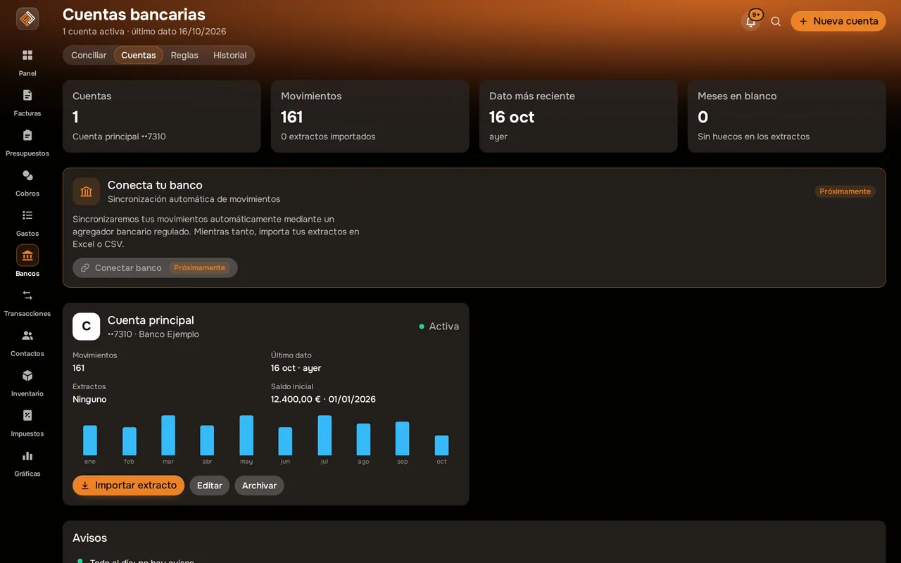

Bancos y conciliación Nuevo
Concilia tu banco con tus facturas y gastos en minutos.
Importa el extracto que descargas de tu banco y Facturales te propone, movimiento a movimiento, con qué factura, gasto o transacción encaja. Tú confirmas; nada se registra sin tu acción.
Función nueva en despliegue gradual.

Captura real de Facturales con datos de ejemplo.
Así se ve en la app
Tus cuentas, de un vistazoSaldo, movimientos importados y meses sin extracto de cada cuenta.

Qué puedes hacer
Extractos en Excel o CSV
Importa archivos xls, xlsx o csv de una o varias cuentas bancarias.
Emparejado uno a uno
Cada movimiento se empareja con una factura, un gasto o una transacción, y siempre lo confirmas tú.
Reglas y memoria
Crea reglas para los movimientos que se repiten; Facturales recuerda cómo los clasificaste.
Cuadre de saldos
Comprueba que el saldo de Facturales coincide con el de tu extracto.
Historial con deshacer
Cada importación queda en el historial y puedes deshacerla por lotes.
Informe en CSV
Descarga el resultado de la conciliación para tu gestoría.
Conecta tu banco
Sincronización automática de movimientos a través de un agregador bancario regulado. Mientras llega, importa tus extractos.
Cómo funciona
Descarga el extracto
Desde la web de tu banco, en Excel o CSV.
Impórtalo
Elige la cuenta y revisa los movimientos detectados.
Concilia
Acepta las sugerencias, ajusta las dudosas y cuadra el saldo.
Preguntas frecuentes
¿Se conecta directamente con mi banco?
Todavía no: la conexión directa con tu banco llegará próximamente a través de un agregador bancario regulado. Mientras tanto importas los extractos que descargas de tu banco en Excel o CSV.
¿Puedo equivocarme y deshacerlo?
Sí. Cada importación queda en el historial y puedes deshacerla por lotes.
¿Qué pasa con una devolución?
Las devoluciones se tratan como tales y no se cuentan como un ingreso o un gasto nuevo.
¿Está disponible en mi cuenta?
Bancos es una función nueva que estamos activando de forma gradual. Si aún no la ves, escríbenos a soporte@facturales.es.
Pon orden en tus finanzas esta semana
Crea tu cuenta, emite tu primera factura e importa tu primer extracto. Tienes 14 días de prueba en cualquier plan y puedes cancelar cuando quieras.